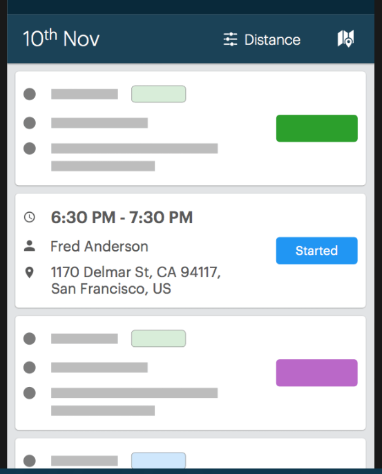
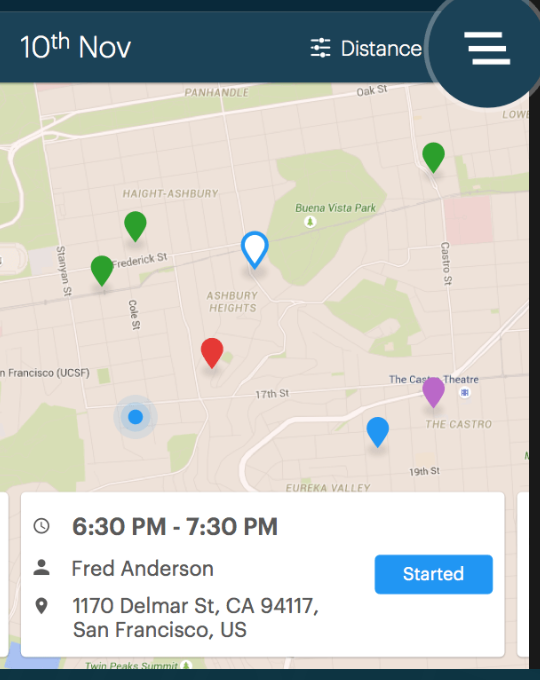
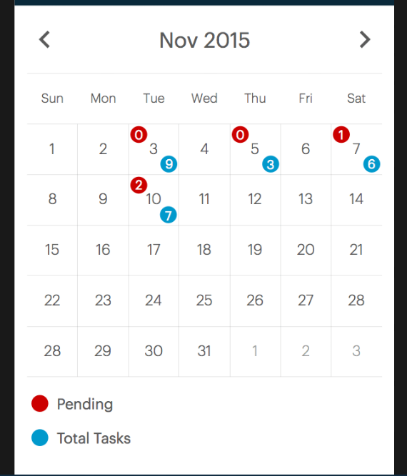
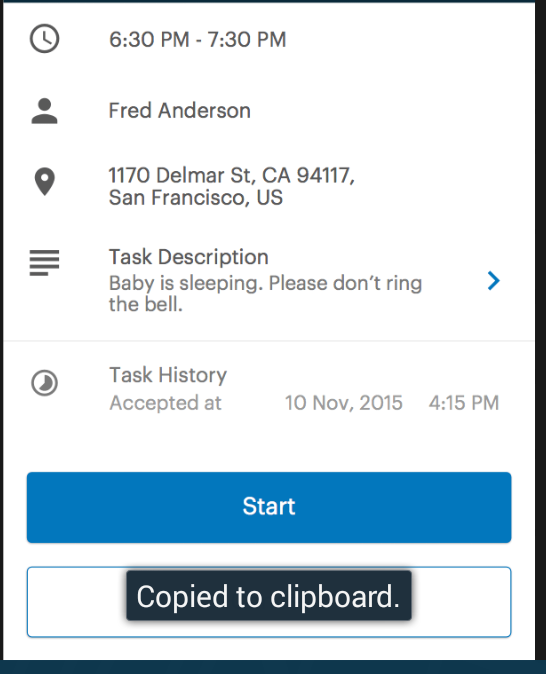
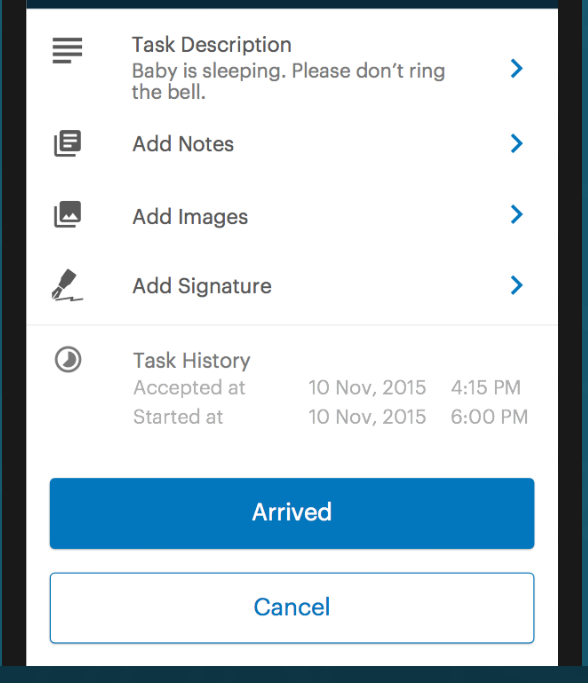
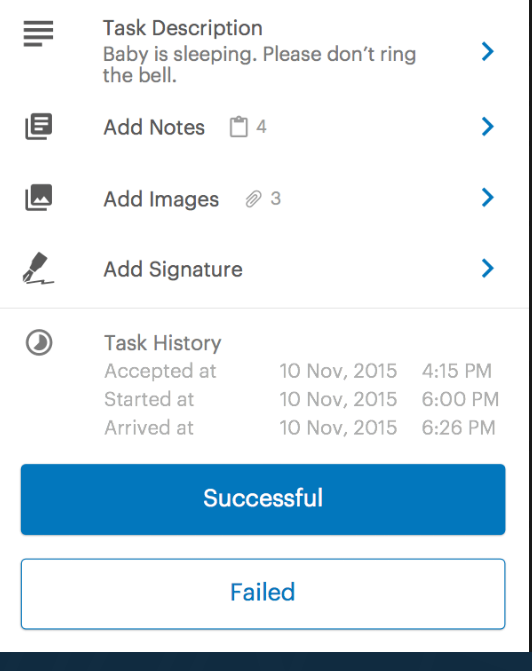

<style>
    img {
        width: 100%;
        height: auto;
        padding: 10%;
    }

    .pane {
        background-color: #016699;
    }

    h3 {
        color: #ffffff;
        padding:5%;
    }

    .ion-record:before {
        color: #fff;
    }
</style>
<ion-view title="Totorials">
    <ion-nav-bar class="bar-stable"><ion-nav-back-button class="button-icon icon ion-ios-arrow-back">Back</ion-nav-back-button></ion-nav-bar>
    <ion-scroll direction="xy">
        <ion-slide-box on-slide-changed="slideHasChanged($index)" style="margin-top:50px;">
            <ion-slide>
                <center><h3>View and manage multiple tasks simulteniously</h3></center>
                <div class="box"></div>
            </ion-slide>
            <ion-slide>
                <center><h3>Switch between 'List View' and 'Map View' just in one tap</h3></center>
                <div class="box"></div>
            </ion-slide>
            <ion-slide>
                <center><h3>View all your past and future tasks in the calander</h3></center>
                <div class="box"></div>
            </ion-slide>
            <ion-slide>
                <center><h3>tap on a task to view the details and tap to 'start button to begin'</h3></center>
                <div class="box"></div>
            </ion-slide>
            <ion-slide>
                <center><h3>Once you reach to destination, tap the 'Arrived Button'</h3></center>
                <div class="box"></div>
            </ion-slide>
            <ion-slide>
                <center><h3>Tap on 'Succesful' or 'failed Button' once you complete the task</h3></center>
                <div class="box"></div>
            </ion-slide>
            
        </ion-slide-box>
        </ion-scroll>
</ion-view>